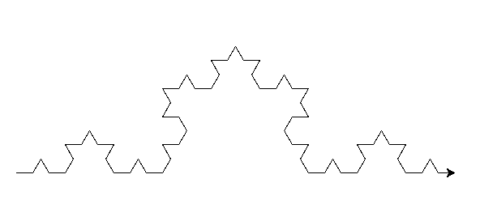
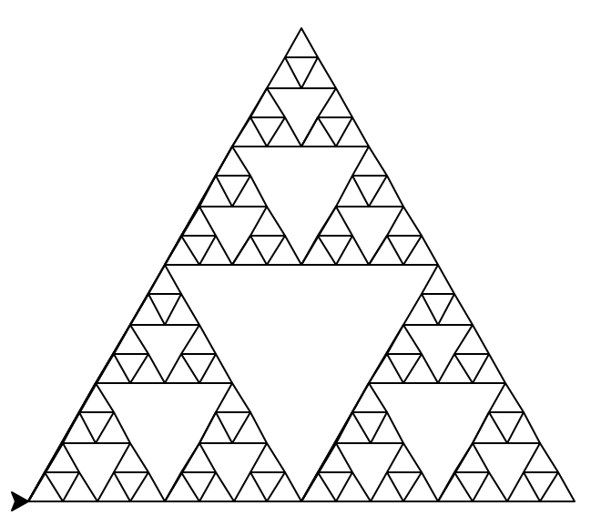
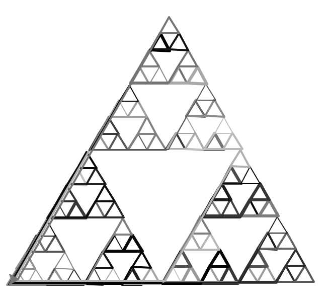
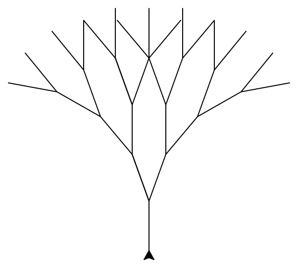
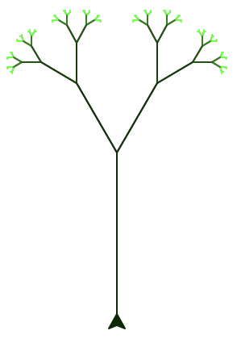

<----- koch_curve(t, 4, 20)

def koch_curve_2(t, depth, size):
if depth == 0:
t.fd(size)
else:
for i in [[85,1.3], [190,1], [85,1], [0,1]]:
koch_curve_2(t, depth - 1, size // (3*(i[1])))
t.left(i[0])
This modification makes the koch curve
have variations in the measurements for
length and angles.
<----- sierpinski(t, 5, 200)

def koch_curve_2(t, depth, size):
if depth == 0:
t.fd(size)
else:
for i in [[85,1.3], [190,1], [85,1], [0,1]]:
koch_curve_2(t, depth - 1, size // (3*(i[1])))
t.left(i[0])
This modification makes the sierpinski triangle
look like it was doodled with a
pen running out of ink as it has various shades of
grey and black as well as varying
line thicknesses.

<----- tree(t, 4, 50, 20)

def koch_curve_2(t, depth, size):
if depth == 0:
t.fd(size)
else:
for i in [[85,1.3], [190,1], [85,1], [0,1]]:
koch_curve_2(t, depth - 1, size // (3*(i[1])))
t.left(i[0])
This modification makes the tree fractal
branches grow shorter the more branches
there are. Additionally, the branches grow
lighter green.
